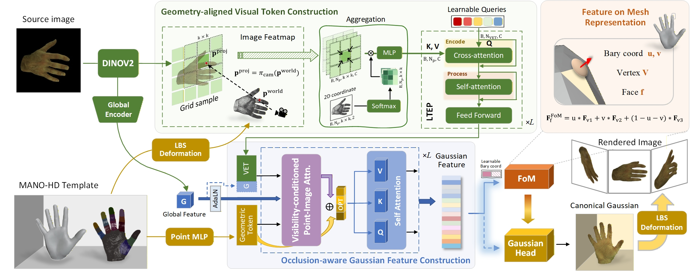
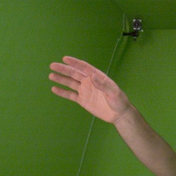
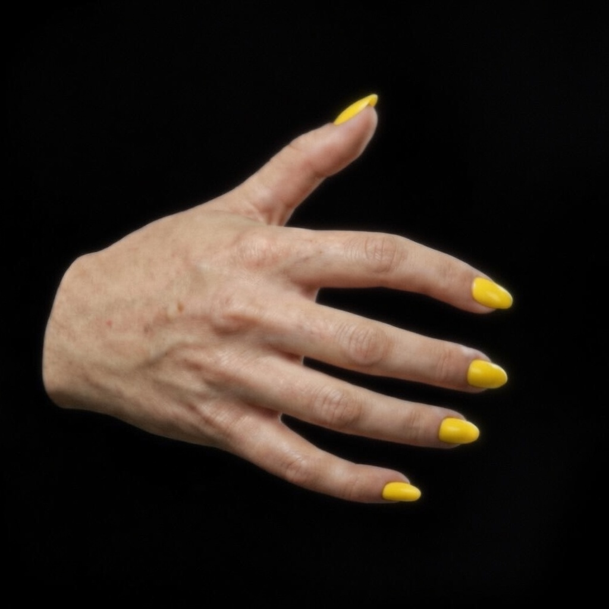
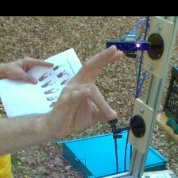
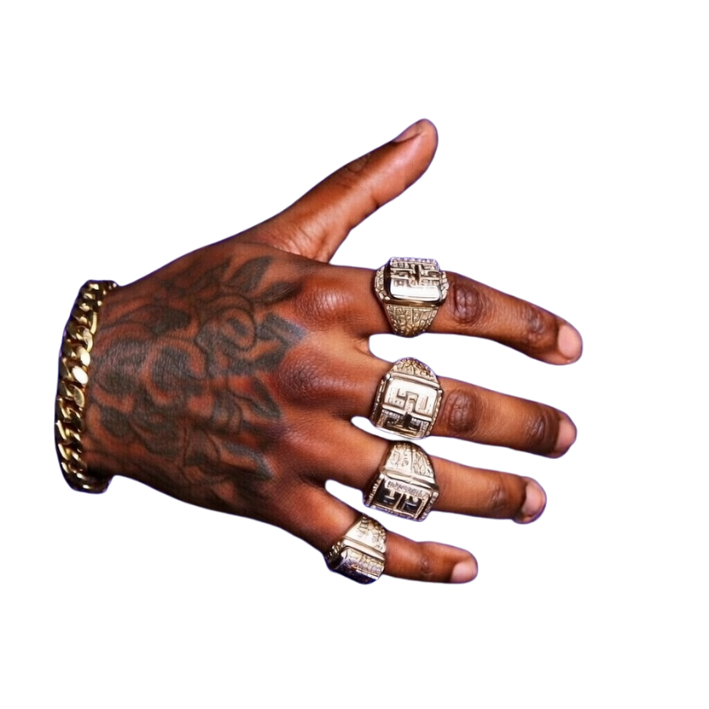
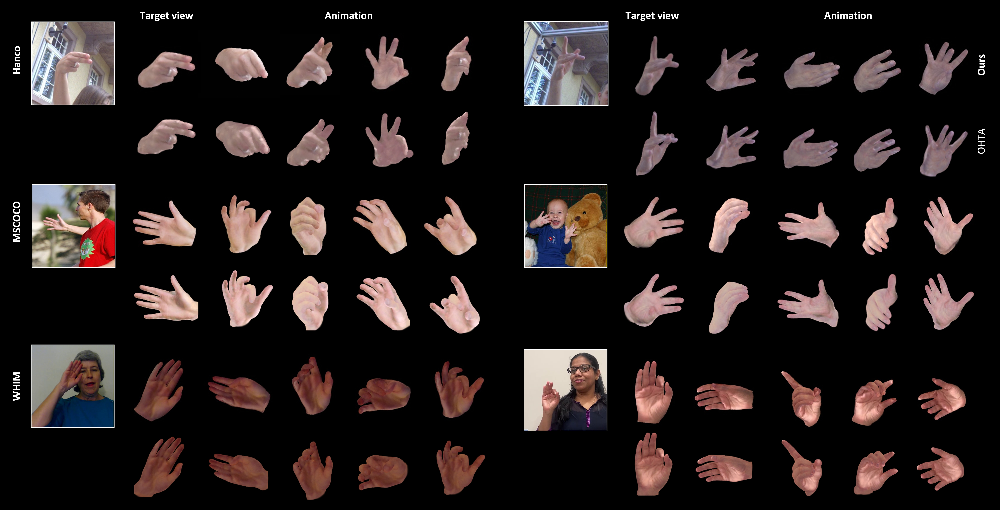
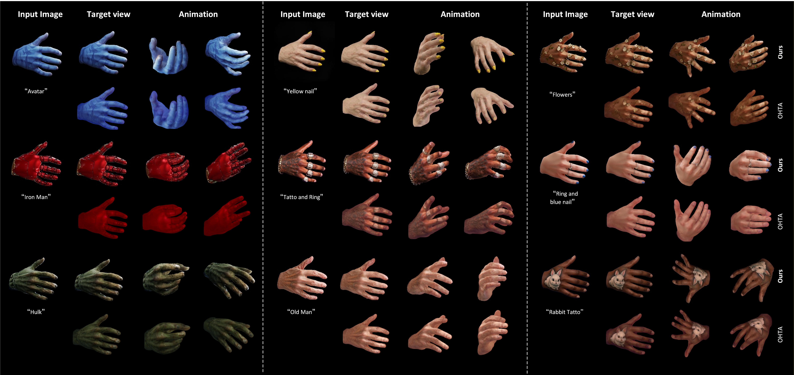

Abstract
Single-image 3D hand avatar reconstruction is fundamentally ill-posed and particularly challenging due to limited visual evidence under severe self-occlusion and the complex pose-dependent deformation of highly articulated hands. Existing methods predominantly rely on implicit NeRF-style representations, whose volumetric fitting is computationally expensive and often struggles to preserve fine-grained hand details. In this work, we present OASIS, a tailored 3D Gaussian Splatting framework for single-image hand avatar reconstruction. To faithfully encode sparse image-specific appearance cues in single-view reconstruction, we construct geometry-aligned visual evidence tokens by explicitly aligning input image observations with 3D hand geometry and context-adaptively tokenizing the resulting visual evidence. Since severe self-occlusion makes the reliability of image evidence inherently visibility-dependent, we introduce a visibility-conditioned point-image attention to reliably transfer visual evidence to geometric tokens, yielding occlusion-aware Gaussian features for faithful and robust reconstruction. To further capture non-rigid deformation of articulated hands, we introduce a Feature-on-Mesh representation to enable Gaussian deformation to be guided by local surface stretching. Under this framework, we adopt a one-shot adaptation scheme that learns a shared hand prior from multi-identity training data and then fits it to a target image for target-specific reconstruction. Extensive experiments show that OASIS outperforms existing baselines in both visual fidelity and efficiency across challenging poses and in-the-wild scenarios, and further demonstrates strong versatility in downstream applications such as text-to-avatar generation and texture editing. Code will be released upon paper acceptance.
Network Architecture

Video Comparisons

Input Image
Input Image
Input Image
Input ImageExperimental Results
Qualitative Comparison on InterHand2.6M

In the Wild Comparison from HanCo, COCO-Hand, and WHIM Dataset

Applications

BibTeX
@article{OASIS2026,
title={OASIS: Occlusion-aware Single-image Hand Avatar Reconstruction via 3D Gaussian Splatting},
author={Anonymous Authors},
year={2025}
}